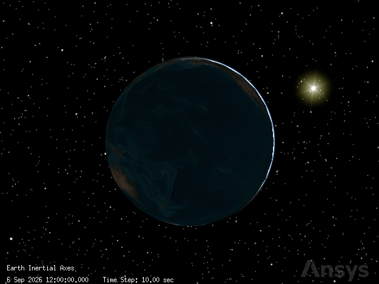
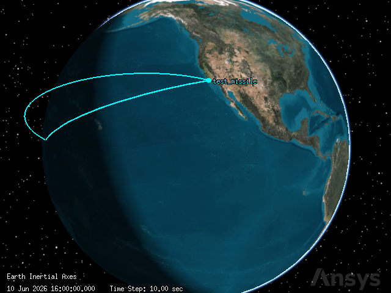
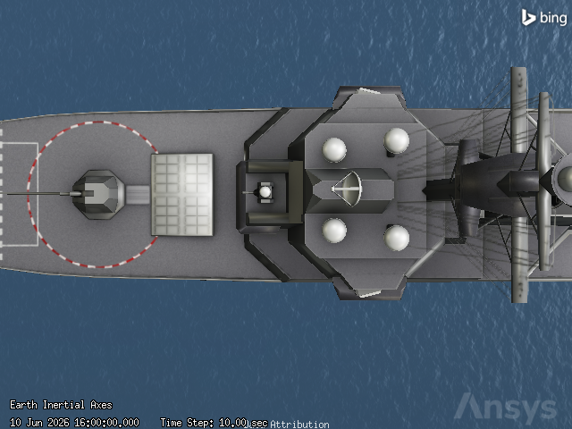

Missile Interference Test#
Problem Statement#
Engineers and operators need to quickly model and analyze a telemetry link from a missile launch and to determine how various settings on a radar will affect its ability to track a missile. You are launching a test missile from a launch pad located on the Pacific Coast of the United States. The missile will transmit telemetry data to a communications system on board a ship anchored off the coast. The missile’s telemetry data will be transmitted on an S-band frequency, which is close to a frequency used by multiple high-power satellite digital audio radio service (SDARS) satellites. Phase one of your test will determine if the satellites, which provide XM radio service, will interfere with ship’s ability to receive the test missile telemetry data. Phase two of your test will determine for how long a shipborne radar system can detect and track the missile during its flight. A custom radar cross section and a radar antenna pattern file are required for your analysis.
This example is based on this tutorial.
Launch a new STK instance#
[1]:
from ansys.stk.core.stkengine import STKEngine
stk = STKEngine.start_application(no_graphics=False)
print(f"Using {stk.version}")
Using STK Engine v13.1.0
Create a new scenario#
[2]:
root = stk.new_object_root()
root.new_scenario("CommRadar_MissileTest_Interference")
Once the scenario is created, you can view a 3D graphics window by running:
[3]:
from ansys.stk.core.experimental.jupyterwidgets import GlobeWidget
globe_widget = GlobeWidget(root, 640, 480)
globe_widget.camera.position = [0, 0, 0]
globe_widget.show()
[3]:

Once the scenario is created, you can view a 2D graphics window by running:
[4]:
from ansys.stk.core.experimental.jupyterwidgets import MapWidget
map_widget = MapWidget(root, 640, 480)
map_widget.show()
[4]:

Set the scenario time period#
[5]:
scenario = root.current_scenario
scenario.set_time_period("10 June 2026 16:00:00.000", "10 June 2026 16:35:00.000")
root.rewind()
Model the test missile#
Insert a new Missile object
[6]:
from ansys.stk.core.stkobjects import Missile, STKObjectType
test_missile = scenario.children.new(STKObjectType.MISSILE, "test_missile")
First, set the units properly. Setting units proactively is a great practice!
[7]:
root.units_preferences.item("Latitude").set_current_unit("deg")
root.units_preferences.item("Longitude").set_current_unit("deg")
root.units_preferences.item("Distance").set_current_unit("km")
Next, design the missile’s trajectory:
[8]:
from ansys.stk.core.stkobjects import (
IPropagator,
PropagatorType,
VehicleImpactLocationPoint,
VehicleLaunchControl,
)
test_missile.set_trajectory_type(PropagatorType.BALLISTIC)
trajectory = test_missile.trajectory
root.units_preferences.set_current_unit("DateFormat", "EpSec")
trajectory.ephemeris_interval.set_explicit_interval(0, 0)
Next, set the launch parameters:
[9]:
trajectory.launch.latitude = 34.7556
trajectory.launch.longitude = -120.6223
trajectory.launch.altitude = 0.0024385
Then, set the impact parameters:
[10]:
impact_location = trajectory.impact_location
impact_location.impact.latitude = 10
impact_location.impact.longitude = 173
impact_location.set_launch_control_type(VehicleLaunchControl.FIXED_DELTA_V)
impact_location.launch_control.delta_v = 6.90194
impact_location.impact.altitude = 0.0024385
Lastly, propagate:
[11]:
trajectory.propagate()
We can now view the test missile’s trajectory:
[12]:
globe_widget.camera.position = [
19252.274451116944,
4639.005171788969,
5592.340350242526,
]
globe_widget.show()
[12]:

Generate an Altitude vs Ground Range report#
Use a data provider to generate the report:
[13]:
provider = test_missile.data_providers.item("Ground Range").group.item("Fixed")
Then, set the time step. This is set in seconds.
[14]:
time_step = 60
Now, generate the report
[15]:
ground_range_report = provider.execute(
scenario.start_time, scenario.stop_time, time_step
).data_sets.to_pandas_dataframe()
ground_range_report[["time", "ground range", "alt"]]
[15]:
| time | ground range | alt | |
|---|---|---|---|
| 0 | 0.000000 | 0.000000 | 0.002439 |
| 1 | 60.000000 | 301.676840 | 260.064691 |
| 2 | 120.000000 | 583.118013 | 499.216861 |
| 3 | 180.000000 | 847.852529 | 718.512810 |
| 4 | 240.000000 | 1098.671575 | 918.858608 |
| 5 | 300.000000 | 1337.823957 | 1101.034496 |
| 6 | 360.000000 | 1567.152601 | 1265.712771 |
| 7 | 420.000000 | 1788.192134 | 1413.472302 |
| 8 | 480.000000 | 2002.240180 | 1544.810324 |
| 9 | 540.000000 | 2210.410493 | 1660.152024 |
| 10 | 600.000000 | 2413.673339 | 1759.858308 |
| 11 | 660.000000 | 2612.886786 | 1844.232104 |
| 12 | 720.000000 | 2808.821442 | 1913.523422 |
| 13 | 780.000000 | 3002.180442 | 1967.933378 |
| 14 | 840.000000 | 3193.615990 | 2007.617338 |
| 15 | 900.000000 | 3383.743447 | 2032.687278 |
| 16 | 960.000000 | 3573.153709 | 2043.213460 |
| 17 | 1020.000000 | 3762.424484 | 2039.225468 |
| 18 | 1080.000000 | 3952.131000 | 2020.712645 |
| 19 | 1140.000000 | 4142.856596 | 1987.623944 |
| 20 | 1200.000000 | 4335.203689 | 1939.867192 |
| 21 | 1260.000000 | 4529.805577 | 1877.307735 |
| 22 | 1320.000000 | 4727.339673 | 1799.766429 |
| 23 | 1380.000000 | 4928.542825 | 1707.016899 |
| 24 | 1440.000000 | 5134.229617 | 1598.781976 |
| 25 | 1500.000000 | 5345.314770 | 1474.729189 |
| 26 | 1560.000000 | 5562.841230 | 1334.465127 |
| 27 | 1620.000000 | 5788.016086 | 1177.528478 |
| 28 | 1680.000000 | 6022.257463 | 1003.381452 |
| 29 | 1740.000000 | 6267.256879 | 811.399239 |
| 30 | 1800.000000 | 6525.063875 | 600.857076 |
| 31 | 1860.000000 | 6798.203245 | 370.914372 |
| 32 | 1920.000000 | 7089.841134 | 120.595274 |
| 33 | 1947.222881 | 7229.313516 | 0.002439 |
Model the test missile’s transmitter#
Insert a Transmitter object
[16]:
from ansys.stk.core.stkobjects import Transmitter
missile_transmitter = test_missile.children.new(STKObjectType.TRANSMITTER, "Missile_Tx")
Use a Medium Transmitter model
[17]:
missile_transmitter.model_component_linking.set_component("Medium Transmitter Model")
transmitter_model = missile_transmitter.model_component_linking.component
Set the transmitter properties
[18]:
transmitter_model.frequency = 2.31
transmitter_model.power = 19.03
transmitter_model.antenna_gain = -0.57
transmitter_model.data_rate = 2.048
Set the transmitter modulation options
[19]:
transmitter_model.set_modulator("BPSK")
transmitter_model.modulator.enable_signal_psd = True
Model the ship#
Insert a new Ship object
[20]:
from ansys.stk.core.stkobjects import Ship
ship = scenario.children.new(STKObjectType.SHIP, "Ship")
Define the ship’s route options#
In the tutorial, the ship is defined to be stationary. First, set the propogator type to great arc:
[21]:
from ansys.stk.core.stkobjects import (
IGreatArcVehicle,
PropagatorGreatArc,
PropagatorType,
VehicleWaypointComputationMethod,
)
IGreatArcVehicle(ship).set_route_type(PropagatorType.GREAT_ARC)
Second, set the altitude reference:
[22]:
from ansys.stk.core.stkobjects import VehicleAltitudeReference
ship.route.set_altitude_reference_type(VehicleAltitudeReference.WGS84)
Now, we can propagate. Set the latitude, longitude, and the timing.
[23]:
PropagatorGreatArc(IGreatArcVehicle(ship).route).set_points_specify_time_and_propagate(
[
[scenario.start_time, 34.196, -120, 0, 0],
[scenario.stop_time, 34.196, -120, 0, 0],
]
)
Insert a Sensor Object
[24]:
from ansys.stk.core.stkobjects import Sensor, SensorPattern, SensorSimpleConicPattern
antenna_motor = ship.children.new(STKObjectType.SENSOR, "Antenna_Motor")
Define the sensor’s cone half angle
[25]:
antenna_motor.set_pattern_type(SensorPattern.SIMPLE_CONIC)
SensorSimpleConicPattern(antenna_motor.pattern).cone_angle = 5
Set the antenna motor’s location type to fixed.
[26]:
from ansys.stk.core.stkobjects import SensorLocation
antenna_motor.set_location_type(SensorLocation.FIXED)
After the location type is set to fixed, the location is editable using cartesian coordinates.
[27]:
root.units_preferences.item("Distance").set_current_unit("ft")
antenna_motor.location_data.assign_cartesian(75, 0, 75)
Target the test missile.
[28]:
from ansys.stk.core.stkobjects import BoresightType, TrackMode
antenna_motor.common_tasks.set_pointing_targeted_tracking(
TrackMode.RECEIVE, BoresightType.ROTATE, "Missile/test_missile"
)
[28]:
<ansys.stk.core.stkobjects.SensorPointingTargeted at 0x763970a26360>
View the targeted antenna is the 3D graphics window
[29]:
globe_widget.camera.position = [
16443720.539118323,
5550468.64120438,
11651969.751643106,
]
globe_widget.show()
[29]:

Model the test ship’s receiver#
Insert a Receiver object that is attached to the “antenna motor” sensor.
[30]:
from ansys.stk.core.stkobjects import Receiver
ship_receiver = antenna_motor.children.new(STKObjectType.RECEIVER, "Ship_Rx")
Use a Complex Receiver model. Once this is set we can edit its properties.
[31]:
ship_receiver.model_component_linking.set_component("Complex Receiver Model")
receiver_model = ship_receiver.model_component_linking.component
Now we can set the receiver to automatically track frequency.
[32]:
receiver_model.track_frequency_automatically = True
Define the receiver’s antenna specifications. First, set the antenna model to helix.
[33]:
from ansys.stk.core.stkobjects import AntennaModelHelix, IAntennaModel
receiver_model.antenna_control.embedded_model_component_linking.set_component("Helix")
helix_model = receiver_model.antenna_control.embedded_model_component_linking.component
Once the antenna model is set to “helix,” we can edit these properties:
[34]:
IAntennaModel(helix_model).design_frequency = 2.5
helix_model.diameter = 0.9
helix_model.efficiency = 55
helix_model.turn_spacing = 0.001
helix_model.number_of_turns = 3
helix_model.backlobe_gain = -30
Let’s now visualize the receiver’s antenna pattern. First define a volume variable.
[35]:
from ansys.stk.core.stkobjects import AntennaVolumeGraphics
volume = ship_receiver.graphics_3d.volume
Before anything else, we must set show volume to “true.” Once this is set, we can edit the rest of the properties.
[36]:
volume.show = True
volume.gain_scale = 0.5
We are now able to edit the pattern properties. These can be set all together at once:
[37]:
volume.set_resolution(
azimuth_start=-180,
azimuth_stop=180,
azimuth_resolution=1,
elevation_start=0,
elevation_stop=90,
elevation_resolution=1,
)
Add gain coloring
[38]:
from ansys.stk.core.stkobjects import FigureOfMeritGraphics2DColorMethod
volume.color_method = FigureOfMeritGraphics2DColorMethod.EXPLICIT
volume.relative_to_maximum = True
Next, add levels to the shading:
[39]:
levels = volume.levels
levels.clear()
for gain in range(-70, 1, 10):
level = levels.add(gain)
Analyze the telemetry downlink’s link budget#
Create a simple link budget to calculate the bit error rate (BER), which reflects of how often errors occur in the transmission of digital data. You can compute a simple link budget using the Access tool. For the purposes of this analysis, a Bit Error Rate of 1.000000e-09 or lower is acceptable.
First, create and compute an access between the receiver and transmitter:
[40]:
from pandas import DataFrame
from ansys.stk.core.stkobjects import Access, ISTKObject
access = ISTKObject(ship_receiver).get_access_to_object(missile_transmitter)
access.compute_access()
After computing the access, we can use data providers to retrieve the link information data.
[41]:
provider = access.data_providers.item("Link Information")
Finally, create and generate the link budget report.
[42]:
link_budget_report = provider.execute(
scenario.start_time, scenario.stop_time, time_step
).data_sets.to_pandas_dataframe()
Focus on the ber column:
[43]:
link_budget_report[["ber"]]
[43]:
| ber | |
|---|---|
| 0 | 0.0 |
| 1 | 0.0 |
| 2 | 0.0 |
| 3 | 0.0 |
| 4 | 0.0 |
| 5 | 0.0 |
| 6 | 0.0 |
| 7 | 0.0 |
| 8 | 0.000001 |
| 9 | 0.00001 |
| 10 | 0.000044 |
| 11 | 0.000132 |
| 12 | 0.000311 |
| 13 | 0.000618 |
| 14 | 0.001082 |
| 15 | 0.001721 |
| 16 | 0.002542 |
| 17 | 0.00354 |
| 18 | 0.004703 |
| 19 | 0.006016 |
| 20 | 0.007459 |
| 21 | 0.007942 |
Insert the interfering satellites#
Get the STK database location using Connect
[44]:
from pathlib import Path
from ansys.stk.core.stkobjects import ExecuteCommandResult
result = root.execute_command("GetDirectory / Database Satellite")
satellite_data_dir = result[0]
file_location = '"' + str(Path(satellite_data_dir) / Path(r"stkAllTLE.sd")) + '"'
Import object from database using Connect
[45]:
command = f"ImportFromDB * Satellite {file_location} Propagate On CommonName SXM-8"
root.execute_command(command)
command = f"ImportFromDB * Satellite {file_location} Propagate On CommonName SXM-9"
root.execute_command(command)
command = f"ImportFromDB * Satellite {file_location} Propagate On CommonName SXM-10"
root.execute_command(command)
[45]:
<ansys.stk.core.stkutil.ExecuteCommandResult at 0x763970a69460>
Assign the satellites to variables:
[46]:
from ansys.stk.core.stkobjects import Satellite
sxm_8 = scenario.children.item("SXM-8_48838")
sxm_9 = scenario.children.item("SXM-9_62259")
sxm_10 = scenario.children.item("SXM-10_64290")
Model the interfering satellites’ transmitters#
[47]:
from ansys.stk.core.stkobjects import TransmitterModelMedium
transmitters = []
for satellite in [sxm_8, sxm_9, sxm_10]:
transmitter = ISTKObject(satellite).children.new(
STKObjectType.TRANSMITTER, "Transmitter"
)
transmitter.model_component_linking.set_component("Medium Transmitter Model")
transmitter_model = TransmitterModelMedium(
transmitter.model_component_linking.component
)
transmitter_model.frequency = 2.3347
transmitter_model.power = 41.2385
transmitter_model.data_rate = 0.048
transmitter_model.antenna_gain = 40
transmitter_model.set_modulator("QPSK")
transmitter_model.modulator.scale_bandwidth_automatically = True
transmitters.append(transmitter)
Assign the satellite transmitters to the existing satellite variables:
[48]:
sxm_8_transmitter = transmitters[0]
sxm_9_transmitter = transmitters[1]
sxm_10_transmitter = transmitters[2]
Check for interference#
There are several methods through which you can determine the impact of interference on a system. For less complex systems, like the one in this scenario, you can compute interference effects directly in a Receiver object.
Create an interference variable. Use this to modify the interference on the receiver.
[49]:
from ansys.stk.core.stkobjects import ISTKObject, RFInterference
interference = RFInterference(
ship_receiver.model_component_linking.component.interference
)
We have to enable interference before we are able to edit the interference sources:
[50]:
interference.enabled = True
Only now are we able to add the interference sources.
[51]:
interference.emitters.add(sxm_8_transmitter.path)
interference.emitters.add(sxm_9_transmitter.path)
interference.emitters.add(sxm_10_transmitter.path)
Determine the impact of interference with a Link Budget - Interference report. First, compute the access.
[52]:
access = ISTKObject(ship_receiver).get_access_to_object(missile_transmitter)
access.compute_access()
Next, use data providers to retrieve the link information data.
[53]:
provider = access.data_providers.item("Link Information")
Finally, generate the link budget report.
[54]:
link_budget_report = provider.execute(
scenario.start_time, scenario.stop_time, time_step
).data_sets.to_pandas_dataframe()
Focus on the ber and ber+i columns:
[55]:
link_budget_report[["ber", "ber+i"]]
[55]:
| ber | ber+i | |
|---|---|---|
| 0 | 0.0 | 0.0 |
| 1 | 0.0 | 0.053852 |
| 2 | 0.0 | 0.227621 |
| 3 | 0.0 | 0.302732 |
| 4 | 0.0 | 0.339659 |
| 5 | 0.0 | 0.360267 |
| 6 | 0.0 | 0.372342 |
| 7 | 0.0 | 0.37918 |
| 8 | 0.000001 | 0.382307 |
| 9 | 0.00001 | 0.382398 |
| 10 | 0.000044 | 0.379608 |
| 11 | 0.000132 | 0.373657 |
| 12 | 0.000311 | 0.363746 |
| 13 | 0.000618 | 0.348244 |
| 14 | 0.001082 | 0.323913 |
| 15 | 0.001721 | 0.283953 |
| 16 | 0.002542 | 0.213095 |
| 17 | 0.00354 | 0.086401 |
| 18 | 0.004703 | 0.007062 |
| 19 | 0.006016 | 0.00882 |
| 20 | 0.007459 | 0.010712 |
| 21 | 0.007942 | 0.011336 |
Mitigate interference with a spectrum filter#
To use a filter, we have to enable it:
[56]:
receiver_model.enable_filter = True
We are now able to set the filter type. Set it to Butterworth for this scenario.
[57]:
receiver_model.filter_component_linking.set_component("Butterworth")
ship_receiver_filter = receiver_model.filter_component_linking.component
Then, set the Butterworth filter properties:
[58]:
ship_receiver_filter.upper_bandwidth_limit = 20
ship_receiver_filter.lower_bandwidth_limit = -20
ship_receiver_filter.cut_off_frequency = 5
ship_receiver_filter.order = 4
Recompute the Link Budget - Interference report. The access must be refreshed first.
[59]:
access = ISTKObject(ship_receiver).get_access_to_object(missile_transmitter)
access.compute_access()
Then retrieve the link information data:
[60]:
provider = access.data_providers.item("Link Information")
Generate the link information report.
[61]:
link_budget_report = provider.execute(
scenario.start_time, scenario.stop_time, time_step
).data_sets.to_pandas_dataframe()
Focus on the ber and ber+i columns:
[62]:
link_budget_report[["ber", "ber+i"]]
[62]:
| ber | ber+i | |
|---|---|---|
| 0 | 0.0 | 0.0 |
| 1 | 0.0 | 0.0 |
| 2 | 0.0 | 0.0 |
| 3 | 0.0 | 0.0 |
| 4 | 0.0 | 0.0 |
| 5 | 0.0 | 0.0 |
| 6 | 0.0 | 0.0 |
| 7 | 0.0 | 0.0 |
| 8 | 0.000002 | 0.000002 |
| 9 | 0.000015 | 0.000015 |
| 10 | 0.000059 | 0.000059 |
| 11 | 0.00017 | 0.00017 |
| 12 | 0.00039 | 0.00039 |
| 13 | 0.000758 | 0.000758 |
| 14 | 0.001303 | 0.001303 |
| 15 | 0.002041 | 0.002041 |
| 16 | 0.002975 | 0.002975 |
| 17 | 0.004097 | 0.004097 |
| 18 | 0.005393 | 0.005393 |
| 19 | 0.006843 | 0.006843 |
| 20 | 0.008426 | 0.008426 |
| 21 | 0.008953 | 0.008953 |
Model the ship’s radar#
First, insert a radar object
[63]:
from ansys.stk.core.stkobjects import Radar
ship_radar = ship.children.new(STKObjectType.RADAR, "Ship_Radar")
Next, set the radar system to monostatic.
[64]:
ship_radar.model_component_linking.set_component("Monostatic")
monostatic_radar = ship_radar.model_component_linking.component
Once the radar system is set to monostatic, we can specify the mode. Select search track.
[65]:
monostatic_radar.mode_component_linking.set_component("Search Track")
monostatic_search_track_radar = monostatic_radar.mode_component_linking.component
Only after setting the mode to search track can we modify the pulse width. This property is located in the pulse definition sub-tab of the waveform sub-tab.
[66]:
monostatic_search_track_radar.waveform.pulse_definition.pulse_width = 8.8e-7
Then, set the goal signal-to-noise ratio. This is also located in the pulse definition sub-tab of the waveform sub-tab.
[67]:
monostatic_search_track_radar.waveform.pulse_integration.snr = 20
Configure the radar’s antenna model to use an external pattern.
[68]:
from ansys.stk.core.stkobjects import AntennaControl, AntennaModelExternal
antenna_control = ship_radar.model_component_linking.component.antenna_control
antenna_control.embedded_model_component_linking.set_component(
"External Antenna Pattern"
)
external_model = AntennaModelExternal(
antenna_control.embedded_model_component_linking.component
)
Once an external pattern is selected, set the design frequency:
[69]:
external_model.design_frequency = 2.8
Then, specify the file from which the pattern will be provided.
[70]:
import pathlib
install_dir = root.execute_command("GetDirectory / STKHome")[0]
external_model.filename = str(
pathlib.Path(install_dir)
/ "Data"
/ "Resources"
/ "stktraining"
/ "samples"
/ "ASR9Low.pattern"
)
Set the radar antenna’s orientation. These properties are located in the orientation sub-tab of the antenna tab.
[71]:
root.units_preferences.item("SmallDistance").set_current_unit("ft")
antenna_control.embedded_model_orientation.position_offset.set(37, 0, 120)
Create a radar transmitter:
[72]:
from ansys.stk.core.stkobjects import RadarFrequencySpecificationType, RadarReceiver
radar_transmitter = ship_radar.model_component_linking.component.transmitter
Set the radar transmitter specifications. First, select frequency as the independent property. Wavelength will be dependent on frequency.
[73]:
radar_transmitter.frequency_specification = RadarFrequencySpecificationType.FREQUENCY
radar_transmitter.frequency = 2.8
Set the power of the radar transmitter. This does not depend on frequency or wavelength.
[74]:
radar_transmitter.power = 100.414
Create a radar receiver:
[75]:
radar_receiver = ship_radar.model_component_linking.component.receiver
Adjust the radar receiver LNA gain
[76]:
radar_receiver.lna_gain = 25
Define the missile’s radar cross section#
The Radar capability enables you to specify an important property of a potential radar target: its radar cross section (RCS). You can define the missile’s RCS using an external RCS file. External RCS files can contain real-valued pattern data or complex-valued pattern data.
First, the missile must not inherit its cross section. We will specify it ourselves. It is now editable.
[77]:
test_missile.radar_cross_section.inherit = False
Create a rcs band variable to manage the cross section properties:
[78]:
from ansys.stk.core.stkobjects import (
RadarCrossSectionComputeStrategyExternalFile,
RadarCrossSectionFrequencyBand,
)
rcs_band = test_missile.radar_cross_section.model_component_linking.component.frequency_bands.item(
0
)
Select an external file for the radar cross section.
[79]:
rcs_band.set_compute_strategy("External File")
external_file_compute_strategy = rcs_band.compute_strategy
external_file_compute_strategy.filename = str(
pathlib.Path(install_dir)
/ "Data"
/ "Resources"
/ "stktraining"
/ "samples"
/ "Basic_missile_mono.rcs"
)
Compute access#
Determine if the ship’s radar can track the test missile. Refresh the access variable:
[80]:
access = ISTKObject(ship_radar).get_access_to_object(test_missile)
access.compute_access()
Create a custom report#
Create a custom report style that shows azimuth-elevation-range (AER) and Radar Search/Track data. First, we will generate the AER Data portion of the report.
[81]:
provider = access.data_providers.item("AER Data").group.item("BodyFixed")
aer_and_search_track_data = provider.execute(
scenario.start_time, scenario.stop_time, time_step
).data_sets.to_pandas_dataframe()
print(aer_and_search_track_data[["time", "azimuth", "elevation", "range"]])
time azimuth elevation range
0 0.068662 -47.33435997690291 -0.19276471290045324 277499.68702389224
1 60.0 -2.278785030710994 34.067636249985355 1462814.02656295
2 120.0 2.637287438600781 34.305712102262504 2708711.7986098365
3 180.0 4.366064376252702 33.09089860338797 3896635.8925933205
4 240.0 5.1966484986581 31.52785544269757 5026421.219034072
5 300.0 5.651390966273694 29.833384453985886 6101062.783855856
6 360.0 5.9140062215640965 28.075614790646533 7123754.095134587
7 420.0 6.065621002107361 26.280807621897182 8097502.7277088445
8 480.0 6.147579911346308 24.459870205420977 9025068.15801134
9 540.0 6.1831565878512755 22.61707804832553 9908977.02534137
10 600.0 6.186450005446279 20.753497348091905 10751553.923284285
11 660.0 6.166496954712688 18.868514539739248 11554945.44885367
12 720.0 6.129357232929657 16.960564389757398 12321151.070449246
13 780.0 6.079247737257478 15.027500470739561 13052049.856776178
14 840.0 6.019194938455114 13.066803550730233 13749418.772868508
15 900.0 5.951430214661957 11.075683708460717 14414955.052709023
16 960.0 5.8776383478087455 9.051131924729772 15050295.712756773
17 1020.0 5.799118657490446 6.989955117389711 15657031.341973325
18 1080.0 5.716893860744762 4.888778704277576 16236723.754792009
19 1140.0 5.631784727363819 2.7440463944039273 16790919.85576909
20 1200.0 5.544463350887707 0.552001321355068 17321167.599849485
21 1220.10828 5.514804058289774 -0.19390516566196064 17493786.858176887
Second, we will generate the Radar SearchTrack portion of the report.
[82]:
root.units_preferences.item("Distance").set_current_unit("km")
provider = access.data_providers.item("Radar SearchTrack")
aer_and_search_track_data = provider.execute(
scenario.start_time, scenario.stop_time, time_step
).data_sets.to_pandas_dataframe()
print(
aer_and_search_track_data[
["s/t integrated snr", "s/t integrated pdet", "s/t pulses integrated"]
]
)
s/t integrated snr s/t integrated pdet s/t pulses integrated
0 22.576748 1.000000 2.0
1 -5.494893 0.000105 512.0
2 -16.636145 0.000101 512.0
3 -21.211116 0.000100 512.0
4 -23.659155 0.000100 512.0
5 -24.981974 0.000100 512.0
6 -25.834754 0.000100 512.0
7 -27.150925 0.000100 512.0
8 -28.248083 0.000100 512.0
9 -30.037316 0.000100 512.0
10 -32.302380 0.000100 512.0
11 -33.878631 0.000100 512.0
12 -35.741058 0.000100 512.0
13 -35.864041 0.000100 512.0
14 -35.248650 0.000100 512.0
15 -36.239022 0.000100 512.0
16 -35.540899 0.000100 512.0
17 -33.922124 0.000100 512.0
18 -32.257246 0.000100 512.0
19 -29.574983 0.000100 512.0
20 -34.115917 0.000100 512.0
21 -39.029565 0.000100 512.0
Third, we will generate the Radar RCS portion of the report.
[83]:
provider = access.data_providers.item("Radar RCS")
aer_and_search_track_data = provider.execute(
scenario.start_time, scenario.stop_time, time_step
).data_sets.to_pandas_dataframe()
print(aer_and_search_track_data[["rcs"]])
rcs
0 21.5498925193463
1 23.80801654878749
2 23.79895484286079
3 23.691431798714746
4 23.52711259802114
5 23.30253099730713
6 23.00502279045346
7 22.635415755390376
8 22.185178876046486
9 21.643958048109162
10 21.004639111379376
11 20.25682073179582
12 19.403254769659824
13 18.42415189631041
14 17.33665224948085
15 16.114323373833987
16 14.793766844632286
17 13.338317492966166
18 11.803556351357258
19 10.158098068570427
20 8.423157515326128
21 7.8536737655751265